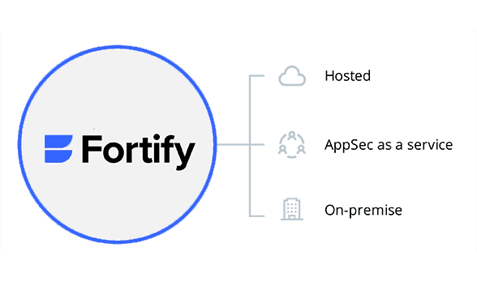

请访问原文链接：Fortify Static Code Analyzer 24.2 for macOS, Linux & Windows - 静态应用安全测试 查看最新版。原创作品，转载请保留出处。
作者主页：sysin.org
Fortify Static Code Analyzer
OpenText™ Fortify Static Code Analyzer 找出源代码中安全漏洞的根本原因，优先处理最严重的问题，并提供详细的修复指导。此外，集中式软件安全管理还能帮助开发人员在更短的时间内解决问题。
笔者注：Static Application Security Testing (SAST)
为什么选择 Fortify Static Code Analyzer?
-
覆盖深度
支持 33 种以上语言的 1,657 个漏洞类别，涵盖 100 多万个单个 API。
-
轻松集成
利用 OpenText Static Application Security Testing (SAST) 的集成生态系统 (sysin)，将安全性嵌入到您使用的应用程序开发工具中。
-
SAST 的速度与深度
通过调整扫描深度和使用审计助手（Audit Assistant）将误报率降至最低，从而控制 SAST 的速度和准确性。
-
企业扩展
动态扩大或缩小 SAST 扫描范围，以满足 CI/CD 管道不断变化的需求。
-
确保云原生应用程序的安全
在单一解决方案中为云原生应用实现从 IaC 到无服务器的全面左移安全性。
-
灵活部署
在企业内部、云端或应用安全即服务（AppSec-as-a-service）中部署我们业界领先的 SAST 解决方案。
以 DevOps 的速度查找安全问题
自动、定制并加速识别和消除漏洞。

-
及早发现安全问题
自定义代码分析和应用规则，以快速识别违规行为，并提供多个查看结果的选项。
-
获得快速准确的扫描
在开发早期识别并消除源代码、二进制文件或字节中的漏洞 (sysin)，并根据 OWASP 1.2b 基准得出准确结果。
-
在 CI/CD 管道中自动实现安全性
将 Fortify 与 CI/CD 工具集成，包括 Jenkins、OpenText™ ALM Octane™、Jira、Atlassian Bamboo、Azure DevOps、Eclipse 和 Microsoft Visual Studio。
-
减少开发时间和成本
将 Fortify 嵌入 SDLC，减少高达 25% 的开发时间和成本。发现的漏洞数量增加一倍，误报率降低 95%。
Fortify Static Code Analyzer 特点
-
便于开发人员使用的语言覆盖范围
支持 ABAP/BSP、ActionScript、Apex、ASP.NET、C#（.NET）、C/C++、Classic、ASP（带 VBScript）、COBOL、ColdFusion CFML、Go、HTML、Java（包括 Android）、JavaScript/AJAX、JSP、Kotlin 等。
-
灵活的部署选项
包括基于 SaaS 的 Fortify On Demand 平台、结合 SaaS 和企业内部功能的 Fortify Hosted 以及可完全控制 Fortify 解决方案的 Fortify On-Prem 等选项。
-
实时代码安全分析和结果
提供专为提高速度和效率而设计的结构和配置分析器 (sysin)。安全助手只返回高可信度的发现，并在集成开发环境中提供即时结果。
-
应用机器学习实现自动化
在几分钟内提供自动审核结果，最大限度地减少审核员的工作量，并通过准确一致的审核结果优先处理问题。
-
扫描中心
在构建服务器上实现轻量级打包，并提供可扩展的集中式扫描基础架构。
Gartner AST 魔力象限领导者
Forify 已连续十年被评为魔力象限领导者。
阅读报告：Magic Quadrant for Application Security Testing 2023
关于 CyberRes
在数字经济中取得成功
我们的使命和热情是帮助我们的客户变得更有弹性，以便他们能够发展业务
OpenText 已完成对 Micro Focus（包括 CyberRes）的收购。我们的综合专业知识可扩展我们的安全产品和服务，帮助客户保护、检测和改进他们的安全态势。客户可以自信地在整个组织范围内做到最好，同时更安全。
CyberRes 利用全球最大安全产品组合之一的专业知识，通过在客户团队和组织内部建立网络和业务恢复能力，帮助我们的客户应对不断变化的威胁形势。我们致力于帮助企业在逆境、危机和市场波动时期加快获得信任、可靠性和生存能力。
系统要求
这里列出操作系统部分，详细描述参看附带的文档。
macOS
- macOS Sequoia 15 (Not Listed)
- macOS Sonoma 14
- macOS Ventura 13
Linux
-
Ubuntu 24.04 x86_64（OVF） (Not Listed)
Windows
- Windows Server 2025（OVF）(Not Listed)
- Windows Server 2022（OVF）
- Windows Server 2019（OVF）
- Windows 11
- Windows 10
新增功能
Fortify Static Code Analyzer
The following features have been added to Fortify Static Code Analyzer.
Platforms
- macOS 14 support
Languages
- Angular 16.1 and 16.2
- Apex 59 and 60
- C23
- Dart 3.1
- Django 5.0
- Flutter 3.13
- Go 1.21 and 1.22
- Java 21
- Kotlin 1.9
- PHP 8.3
- Scala 3, versions 3.3-3.4
- Swift 5.10
- TypeScript 5.1 and 5.2
- Visua- Basic (VB.NET) 16.9
Compilers
- gcc 13
- g++ 13
- Swiftc 5.9.2, 5.10
Build tools
- Baze- 6.4.0
- CMake 3.23.3 and later
- MSBuild 17.9
- xcodebuild 15.3
Features/Updates
- ARM JSON Templates (IaC)
- AWS CloudFormation (IaC)
- Scanning .NET requires .NET SDK 8.0.
- The default python version is now 3.
- The default scan policy has changed from classic to security. The security scan policy excludes issues related to code quality from the analysis results.
- Ability to specify the location of a custom supported JDK or JRE version that is not included in the Fortify Static Code Analyzer installation
- Fortify Static Code Analyzer automatically detects the content of files with a .cls extension to determine if they are Apex or Visua- Basic code. This removes the need to include the -apex option, which is now deprecated.
- Updated LOC (lines of code) calculation: To better align with the LOC count shown by code editors, Fortify Static Code Analyzer now reports the tota- number of lines of code, including blank lines and comments. Due to this change, when you upload an artifact created with Fortify Static Code Analyzer 24.2.0 (or later) to an SSC application version that already contains artifacts generated by earlier versions of Fortify Static Code Analyzer, a one-time approva- may be required if the following processing rule is enabled: Require approva- if line count differs by more than 10%. Once a 24.2.0 artifact has been approved in an application version, subsequent 24.2.0 uploads to that application version wil- no longer trigger the processing rule unless the LOC count changes due to significant code changes or changes in the scan setup.
Fortify Static Code Analyzer Tools
The following features have been added to Fortify Static Code Analyzer tools.
Fortify Applications and Tools Installer
- Now includes the standalone Fortify ScanCentra- SAST client.
Fortify Audit Workbench
- Now includes a timeout setting for downloading analysis results from Fortify Software Security Center.
Secure Coding Plugins
- Support for Red Hat Enterprise Linux (RHEL) 9
- Support for macOS 14
- Fortify Visual Studio Extension supports suppressing issues and auditing multiple issues in batch when remediating analysis results on Fortify Software Security Center.
- Fortify Plugin for Eclipse, Fortify Analysis Plugin for IntelliJ IDEA and Android Studio, and the Fortify Extension for Visua- Studio support analysis with a standalone ScanCentra- SAST client.
- Support for Eclipse 2023-12 and 2024-03
- Support for IntelliJ IDEA 2023.3 and 2024.1
- Support for Android Studio 2023.1 and 2023.2
- The Fortify Analysis Plugin for IntelliJ IDEA and Android Studio, Fortify Plugin for Eclipse, and Fortify Extension for Visua- Studio wil- be available in the relevant marketplaces.
New Issue Reports
- DISA STIG 5.3
- OWASP Mobile Top 10 2024
下载地址
Fortify Static Code Analyzer Applications and Tools 24.2.0 for macOS Universal
Fortify Static Code Analyzer Applications and Tools 24.2.0 for Linux x64
Fortify Static Code Analyzer Applications and Tools 24.2.0 for Windows x64
include Fortify SCA Rules 24.4.0
更多相关产品：
- Magic Quadrant for Application Security Testing 2022
- Magic Quadrant for Application Security Testing 2023
更多：HTTP 协议与安全

文章用于推荐和分享优秀的软件产品及其相关技术，所有软件默认提供官方原版（免费版或试用版），免费分享。对于部分产品笔者加入了自己的理解和分析，方便学习和研究使用。任何内容若侵犯了您的版权，请联系作者删除。如果您喜欢这篇文章或者觉得它对您有所帮助，或者发现有不当之处，欢迎您发表评论，也欢迎您分享这个网站，或者赞赏一下作者，谢谢！
 支付宝赞赏
支付宝赞赏
 微信赞赏
微信赞赏
赞赏一下